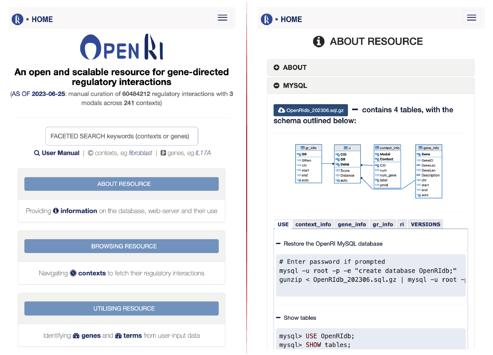

Section 3 Mobile Webserver
The OpenRI webserver is developed as a mobile-first and responsive webserver (the frontend), while the backend is a next-generation Perl web framework that enables real-time access and mining of the OpenRI resource.

FIGURE 3.1: The screenshots for the OpenRI visited using a smartphone. Left: the frontpage; Right: the about page.